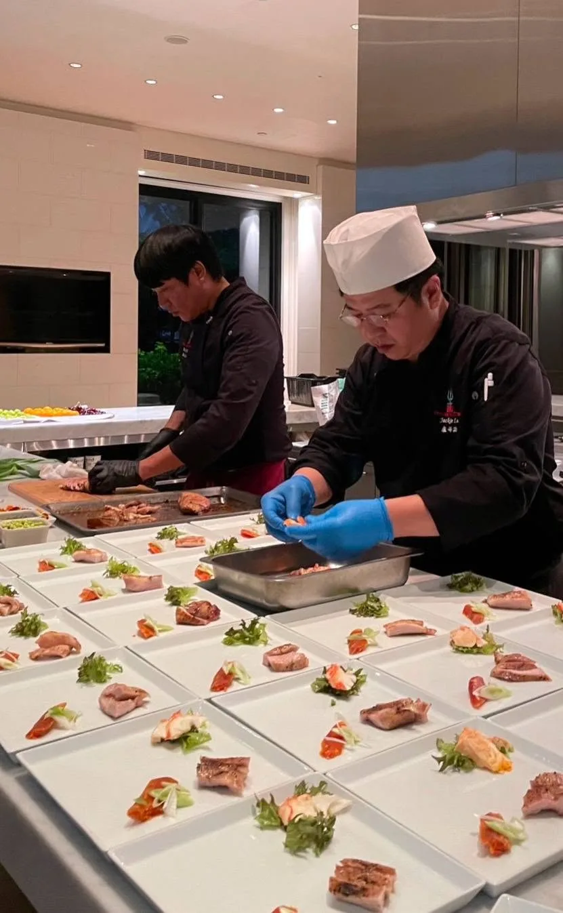

台北外燴推薦名單搜尋起來很多，但真正影響體驗的往往不是評價星數，而是幾個容易被忽略的執行細節，事先問清楚能避開大多數踩雷狀況。
有些外燴是中央廚房提前備好、現場只負責加熱擺盤，跟主廚現場烹調的新鮮度差距很大，這點務必在確認前問清楚。
生鮮食材建議詢問對方是活動當天採購還是提前數日備貨，海鮮、生食類料理的新鮮度差異尤其明顯。
人數規模較大的場合，如果現場人力不足，容易出現出餐延遲或品質不一致的狀況，可以直接詢問對方預計安排多少現場人力。
交通費、器材費、加點費用是否包含在報價內，建議事先取得書面確認，避免活動結束後出現認知落差。
舒苑團隊堅持現場烹調、現場完成，並提供透明報價，更多實際案例可以參考服務案例頁面。
如果你正在尋找台北外燴推薦、想進一步了解舒苑的服務方式，歡迎直接聯繫團隊，會有專人提供更詳細的說明與建議。
提供活動日期、人數與場地，我們將提供最適合的私廚方案與報價建議。